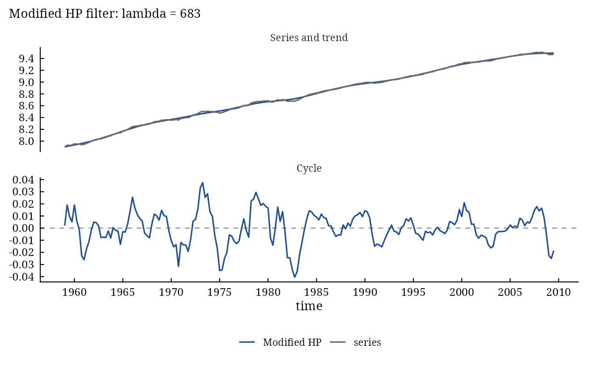

Modified Hodrick-Prescott filter: the smoothing parameter chosen from the data
Source:R/filters.R
mhp_filter.Rdmhp_filter() applies the modified HP filter of McDermott (1997), studied by Choudhary, Hanif and Iqbal
(2014): the smoothing parameter \(\lambda\) is the one of \(1, 2, \dots,\)
max_lambda that minimises a generalised cross-validation criterion, so that every series gets its own
\(\lambda\) instead of the conventional 1600 or 100.
Arguments
- x
a numeric vector or a
tsobject, without missing values; at least 5 observations.- max_lambda
the largest \(\lambda\) of the search over \(1, 2, \dots,\)
max_lambda(default 100000).- as_dt
TRUE(default) returns adata.table;FALSEa list.- log_scale
filter the logarithm of the series (default
FALSE, as in version 0.1.0).- criterion
"approximate"(default: eq. 6, as in version 0.1.0 and the published code) or"exact"(eq. 5).
Value
With as_dt = TRUE, a data.table with the columns original, trend,
cycle (and time for a ts) and the attributes lambda and gcv. With
as_dt = FALSE, a list of class c("mhp_mhp", "mhp", "mhp_result", "list") with original,
trend, cycle, lambda, gcv as in version 0.1.0, then gcv_path (the criterion
for every \(\lambda\) of the search), log_scale, criterion, trend_log and
cycle_log (with
log_scale = TRUE), time and frequency (for a ts). Methods: print(),
plot(),
ggplot2::autoplot(), mhp_interpret().
Details
For each candidate \(\lambda\) the trend \(\hat{\mathbf{g}}(\lambda)\) of
hp_filter() is computed and
$$\mathrm{GCV}(\lambda) = \frac{1}{T}\left(1 + \frac{2T}{\lambda}\right)\sum_{t=1}^{T}\left(x_t -
\hat{g}_t(\lambda)\right)^2$$
(Choudhary et al. 2014, eq. 6; Hanif et al. 2017, eq. 4); \(\hat\lambda\) minimises it. This is
Silverman's (1984) approximation of generalised cross-validation (Craven and Wahba 1979),
$$\mathrm{GCV}(\lambda) = \frac{T^{-1}\sum_{t}(x_t - \hat{g}_t(\lambda))^2}{\left(1 -
T^{-1}\mathrm{tr}\,\mathbf{B}(\lambda)\right)^2}$$
(Choudhary et al. 2014, eq. 5), which criterion = "exact" uses: the eigenvalues
\(\mu_i\) of \(\mathbf{A}\), computed once, give \(\mathrm{tr}\,\mathbf{B}(\lambda) =
\sum_i (1 + \lambda\mu_i)^{-1}\) and the residual sum of squares for
every \(\lambda\) in \(O(T)\) operations (the decomposition costs \(O(T^3)\), a
fraction of a second for a few hundred observations). Each trend costs
\(O(T)\) operations, so the search over 100000 values takes about a second for 200 quarterly observations.
The search is that of the authors' MATLAB code (modifiedhpfilternew.m, Choudhary et al. 2014), which
omits the factor \(1/T\) (it does not change the minimum) and works on the series as given; filter the
logarithm of a series (as in the papers) with log_scale = TRUE or by passing log(x).
Changes from version 0.1.0. The criterion is unchanged (the help page of 0.1.0 printed the factor as \(1 + 2/(T\lambda)\), but the code used \(1 + 2T/\lambda\)); every trend is now a banded solve instead of a dense one, so results agree with 0.1.0 to rounding error at a fraction of the time.
References
Choudhary, M. A., Hanif, M. N. and Iqbal, J. (2014). On smoothing macroeconomic time series using the modified HP filter. Applied Economics, 46(19), 2205–2214. doi:10.1080/00036846.2014.894631
Craven, P. and Wahba, G. (1979). Smoothing noisy data with spline functions. Numerische Mathematik, 31, 377–403. doi:10.1007/BF01404567
Silverman, B. W. (1984). A fast and efficient cross-validation method for smoothing parameter choice in spline regression. Journal of the American Statistical Association, 79(387), 584–589. doi:10.1080/01621459.1984.10478084
McDermott, C. J. (1997). An automatic method for choosing the smoothing parameter in the HP filter. Unpublished, International Monetary Fund, Washington DC; described in Coe, D. T. and McDermott, C. J. (1997). Does the gap model work in Asia? IMF Staff Papers, 44(1), 59–80. doi:10.2307/3867497
Author
Muhammad Yaseen (myaseen208@gmail.com)
Examples
data(us_macro)
gdp <- ts(data = us_macro$gdp, start = c(1959, 1), frequency = 4)
mhp <-
mhp_filter(
x = log(gdp)
, max_lambda = 100000
, as_dt = FALSE
, log_scale = FALSE
, criterion = "approximate"
)
mhp
#> Modified HP Filter Result
#> ==============================
#> Observations: 203
#> Optimal lambda: 683
#> GCV: 2.82e-04
#>
#> Cycle Statistics:
#> Mean: -1.634e-13
#> SD: 0.01333
#> AR1: 0.828
#> Range: 0.07802
#>
#> Sources: Hodrick and Prescott (1997); McDermott (1997); Coe and McDermott
#> (1997); Choudhary et al. (2014); Choudhary et al. (2014, MATLAB code). Full
#> references: mhp_cite(x).
plot(x = mhp)
